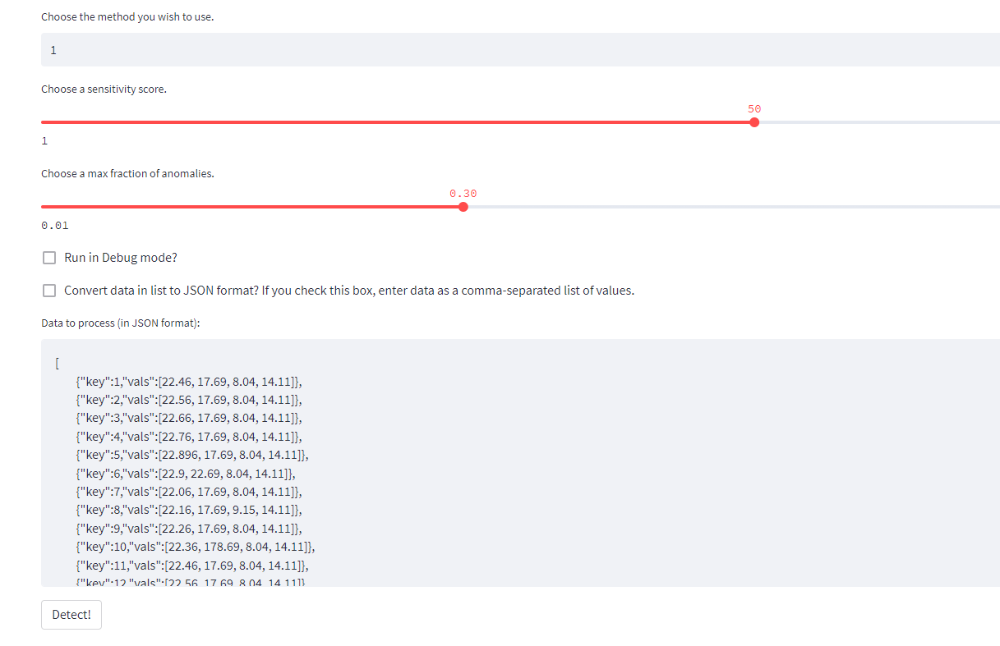
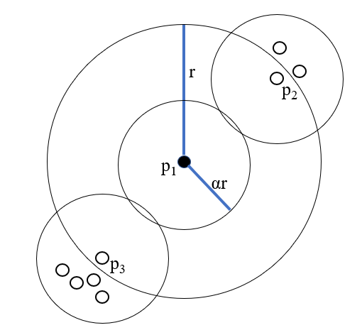

Implementing Multivariate Anomaly Detection in Python
Kevin Feasel (@feaselkl)https://csmore.info/on/multiad
Who Am I? What Am I Doing Here?


Finding Ghosts in Your Data

- Anomaly and outlier detection for developers
- Includes detailed algorithmic discussions and practical implementations
- Will summarize several chapters
What We'll Do
What We'll Do
What We'll Do
What We'll Do
What We'll Do
Agenda
- Anomalies and Outliers
- Univariate Outlier Detection
- Multivariate Outlier Detection
- Building a Detector
- LOF
- COF
- LOCI
- COPOD
Outliers and Anomalies
In the academic literature, there is some ambiguity in the definitions of outliers and anomalies. Some authors mean them to be the same and other authors differentiate the two terms. I will follow the latter practice.
An outlier is something sufficiently different from the norm that we notice it.
An anomaly is an outlier of interest to humans.
Let's dive further into general concepts and technical definitions.
General Concepts
The non-technical definition of an anomaly is essentially “I’ll know it when I see it.” This can get muddled at the edges, but works really well because humans are great at pattern matching and picking out things which look dissimilar.
Technical Definitions
A layman’s concept of anomalies is great, but it is ambiguous. Some things which might look strange actually aren’t anomalous behavior, whereas some anomalies might look reasonable from a first glance.
Anomalies on a Fitted Distribution
Anomalies on a Box Plot
Does This Look Weird to You?
For an in-depth look at the topic of outliers, check out https://csmore.info/on/anomalies for a full-length introduction to outlier detection.
Agenda
- Anomalies and Outliers
- Univariate Outlier Detection
- Multivariate Outlier Detection
- Building a Detector
- LOF
- COF
- LOCI
- COPOD
Univariate Outlier Detection
Univariate = One variable
We have a thing whose behavior we want to understand and the only thing we have available is a stream of data points. This stream may or may not be part of a time series--if so, that is known as univariate time series analysis.
Univariate Techniques
A variety of techniques are available for univariate outlier detection. Most of these techniques incorporate an analysis of the distribution of the data: how frequently we see certain values, as well as how close a given value is to others.
Agenda
- Anomalies and Outliers
- Univariate Outlier Detection
- Multivariate Outlier Detection
- Building a Detector
- LOF
- COF
- LOCI
- COPOD
Multivariate Outlier Detection
Fundamentally, multivariate outlier detection is an extension of univariate outlier detection. We still want to find points which are different from the norm.
A key difference is that distributions tend to be much more complex as different variables correlate to one another.
How This Applies
Here, we have two variables which we expect to correlate fairly well.
How This Applies
If we expect correlation, we can regress one against the other and look for points well off of a given line.

Non-Numeric Inputs
Univariate outlier detection almost always focuses around numeric data. With multivariate outlier detection, we still emphasize numeric variables but might also have non-numeric variables. The problem is that all of our techniques expect numeric inputs, not strings or other non-numeric types.
Non-Numeric Inputs
There are a few ways to deal with this problem:
- Ordinal encoding
- One-hot encoding
- "Bag of words" or word2vec word translation
- Semantic models to transform words and phrases to numeric values
For simplicity, we'll send in numeric data only.
From Distributions to Clusters
Typically, however, we don't expect such close correlation in variables and instead want to analyze clusters of data.
Intuitively, outliers are points which are sufficiently "far" from other points (or the majority of points)--if there were a lot of points clustered closely together, they'd be inliers!
In practice, we have techniques which help us formalize this intuition.
Agenda
- Anomalies and Outliers
- Univariate Outlier Detection
- Multivariate Outlier Detection
- Building a Detector
- LOF
- COF
- LOCI
- COPOD
Building a Detector -- The Architecture
- Language: Python
- "Real-time" detection microservice based on API calls
- Use FastAPI for handling API calls
- Use pytest to perform unit testing
- Use Postman to perform integration testing
- Use Streamlit to visualize results
Demo Time
Agenda
- Anomalies and Outliers
- Univariate Outlier Detection
- Multivariate Outlier Detection
- Building a Detector
- LOF
- COF
- LOCI
- COPOD
Distance as an Indicator
Distance is a great indicator of whether a point is an outlier.
Distance or Density?
But it isn't the only one. In this case, A is further from the middle than B, but A is clearly part of a cluster whereas B is outside its own cluster.
Density and Transitivity
Typically, we calculate density as distance to the k nearest neighbors. As a quick note, these values are NOT transitive! The two nearest neighbors of the black dot do not include the black dot in their two nearest neighbors.

Local Outlier Factor
Local Outlier Factor (LOF) is a density-based approach to finding outliers in a dataset.
We want to measure the local density of any given data point and see how it compares to its k nearest neighbors.
Local Outlier Factor

The neighborhood size (k) here is 5. We find the distance to the kth point and all points inside that zone have the same reachability distance.
Local Outlier Factor
For any point outside that neighborhood, we calculate the distance from x to that point (e.g., b).
Local Outlier Factor
The reachability density is the reciprocal of the average reachability distance.
Local Outlier Factor
Finally, the Local Outlier Factor is the ratio of local reachability densities of all other data points versus x. The higher the value, the more likely this is an outlier.
There is no exact value of "What value indicates an outlier?" Instead, we often track the top few percent (e.g., top 5%) and report those as outliers.
Agenda
- Anomalies and Outliers
- Univariate Outlier Detection
- Multivariate Outlier Detection
- Building a Detector
- LOF
- COF
- LOCI
- COPOD
The Problem with Local Outlier Factor
LOF sounds great but breaks down when densities change. The black dot is an obvious outlier but the cutoff point for it also marks all the points in the circle as outliers, even though they aren't!

COF
Connectivity-Based Outlier Factor (COF) is an attempt to deal with the relative density problems in LOF.
To do so, it adds isolativity in addition to density, where isolativity is the degree to which an object is connected to other objects.
Calculating Isolativity
First, build a chain of length k, linking the current chain to to the next-nearest neighbor. Here, k = 6, covering a total of 7 nodes.

Calculating Isolativity
Then, perform a weighted calculation which emphasizes the lower-numbered links more than the higher-numbered links. This gives us the COF value. Points with higher COF values are more likely to be outliers.
Implementing COF: PyOD
The PyOD library has an implementation of COF we can use.
Demo Time
Agenda
- Anomalies and Outliers
- Univariate Outlier Detection
- Multivariate Outlier Detection
- Building a Detector
- LOF
- COF
- LOCI
- COPOD
The Problem with COF
COF is definitely better than LOF and is a useful part of an ensemble. The problem is that COF does not provide specific guidance on what is an outlier.
The closest we have is an ordered list (letting us choose the top X% by score) and the ability to create our own cutoff.
Local Correlation Integral
Local Correlation Integral (LOCI) is intended to solve this problem by creating an automated cut-off to determine whether a given point is an outlier.
Won't You Be My Neighbor?
LOCI does not ask for k nearest neighbors. It instead asks for a neighborhood size alpha, representing a max distance between neighbors for our calculation.
0 < alpha < 1 and the typical default is alpha = 0.5.
Sampling Neighborhood
The sampling neighborhood r around a point p1 represents all the points to which we will compare p1 for normality.
Counting Neighborhood
The counting neighborhood alpha * r around a point p1 represents how closely packed the points around p1 are.
Performing the Count
In this case, p1's counting neighborhood size is 1. p2's size is 3 and p3's size is 5. p2 and p3 are in p1's sampling neighborhood so will be the two direct comps, so the mean of alpha*r neighbors is 3.
Doing the Math
The formula for Multi-Granularity Deviation Factor (MDEF) is 1 - (my counting neighborhood size)/(average counting neighborhood size for my sampling neighborhood).
For p1, that is 1 - (1 / 3) = 2/3.
For p2, that is 1 - (3 / 3) = 0.
For p3, that is 1 - (5 / 3) = -2/3.
Doing the Math
We also want to calculate the standard deviation of MDEF, which is calculated as (standard deviation of counting neighborhood sizes in my sampling neighborhood)/(average counting neighborhood size for my sampling neighborhood).
Doing the Math
This gets us to our final parameter: k, representing the number of standard deviations from MDEF before we declare an outlier. By convention, this is 3.
If the set of neighborhood sizes follows a normal distribution, fewer than 1% of data points will trigger when k = 3.
Implementing LOCI: PyOD
The PyOD library has an implementation of LOCI we can use.
It is, however, very slow. Therefore, we will only use this when the data set is sufficiently small (e.g., less than 1000 data points).
Demo Time
Agenda
- Anomalies and Outliers
- Univariate Outlier Detection
- Multivariate Outlier Detection
- Building a Detector
- LOF
- COF
- LOCI
- COPOD
More than Clusters
LOF, COF, and LOCI are all clustering-based approaches to outlier detection: we look for points sufficiently distant from other points as outliers.
Another technique is to use copulas.
What is a Copula?
A copula is a link. In language, copulas are links between subject and predicate, such as the helper verb "to be."
In statistics, a copula is "a probability model that represents a multivariate uniform distribution, which examines the association or dependence between many variables" (Kenton).
Okay, but What is a Copula?
Imagine a multivariate dataset. Each variable in the dataset may follow its own probability distribution.
In addition, variables may be correlated. In other words, there is a joint probability distribution between some set of variables in our dataset.
How do we model the joint probability distribution of any combination of these variables?
Copulas!
We transform a joint probability distribution into several marginal distributions (aka marginals). These marginals are all independent and therefore not correlated with other variables.
A copula is a function which transforms a single joint distribution to multiple marginal distributions.
Implementing COPOD: PyOD
The PyOD library also has an implementation of COPOD we can use.
One important consideration here is that the scale of COPOD differs significantly from COF and LOCI. Furthermore, it changes based on the median of the dataset.
Demo Time
From Outlier to Anomaly
The last step in the process is for a human to understand whether any given outlier is actually an anomaly and act upon it. We have built an outlier detection engine but people turn it into an anomaly detector.
As a bonus, if you allow people to mark outliers as anomalous or not, you can use that data to train a future model, possibly one which is considerably better than what a general-purpose outlier detection engine will give you.
Wrapping Up
To learn more, go here:
https://csmore.info/on/multiad
To get a copy of the book, go here:
Finding Ghosts In Your Data
And for help, contact me:
feasel@catallaxyservices.com | @feaselkl
Catallaxy Services consulting:
https://CSmore.info/on/contact